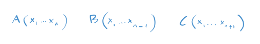
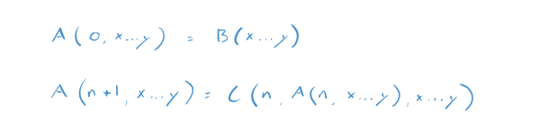
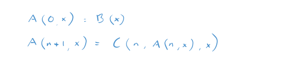

Thinking Through the Definition of Recursive Function
Notes on Godel's Incompleteness Theorem
Start with the functions:
Note that B has one less argument than A and that C has one more argument than A. For example, if A has two arguments, then A, B, and C look like:
If A has one argument, then B is just a number - a constant - and A, B, and C look like.
Now for the definition.
The function A is recursively defined from the functions B and C when the following holds.
Given numbers n and x...y:
There's a lot going on here. For clarity, here is A with two arguments.
And here it is with one argument. B, in this instance, isn't a function. It is a number like 12 or 101.